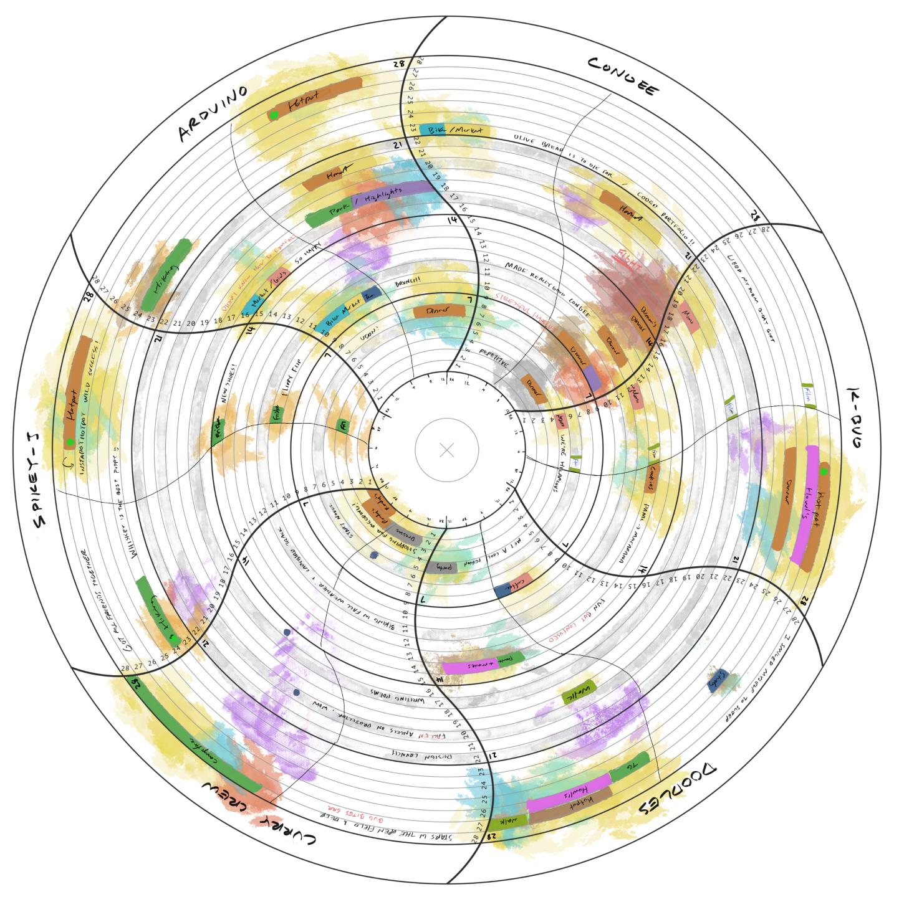

Data Self Portrait
Task
The challenge was to collect personal data about some aspect of daily life over the course of several weeks. This data is then used to create a visualized “self portrait”.
Data Collection
I chose to record multiple factors of my daily life, including:
- An hourly calendar of how I spent my time
- A numerical rating of each day
- Good / bad moments from each day
Draft 1
My original idea was to create a tapestry (using an automated embroidery machine) that weaves time into fabric form.
In the preliminary visualization, the amounts of time I spent in each area of my life were color-coded into proportional blocks.
After creating this draft, I realized that - while the idea of visualizing data with string would be interesting to pursue in the future - the concept of representing lengths of time in a vacuum does not tell a compelling story.
It was also clear right away that objective / numerical measures (like “rating” a day) does not hold any real meaning.
Research + Experimentation
I searched for a way to bring more story-telling to my self portrait. As I went back over the data collected, I realized that most of my favorite moments recorded from each day were related to my friends. So that sparked the question: what if I just represented the time I spent with my favorite people?
Pivoting directions meant going back to the drawing board to generate new ways of representation for the body of data that I had. Looking at design books as well as online resources, I tried finding inspiration for novel ways of visualization that I have not yet experimented with. I was especially influenced by the book Dear Data by Giorgia Lupi and Stefanie Posavec and the generous honesty of their visualizations of daily life.
While on a break away from this project, I happened to stumble upon an image of Honeywell’s weather-recording device. Enamored by its aesthetic pattern and its potential for data visualization, I decided to use it as the base for my self portrait.


This draft came out rather spontaneously as I played with the limitation of using the base chart. I split the ellipse into quadrants representing each friend and each line as a unit for one day. I drew from the original data to record the time I spent with people each day and the activity, as well as including the good / bad moments as written snippets.
With it being a personal piece about my friends, I wanted to introduce emotion to the representation and excavated additional “data” about my moods from my journals. It felt appropriate to use paint-textured splatters that bleed through the lines.
Refinement
From critiques, it was clear that the mission at this point in the process was finding how to present the portrait to an audience and the considering the various questions that brings:
- What information methods should be used to convey the data (legends, pointers ...)?
- What forms of print media would best communciate the content (poster, booklet ...) ?
Using sketching and rough paper prototypes, I experimented with different ways of representation: exploring ways of segmenting, layering, zooming in, drawing attention to...
In the end, I decided to follow advice from critiques of keeping focus on the poster itself and letting the audience linger on it, exploring it on their own terms.
Final Product